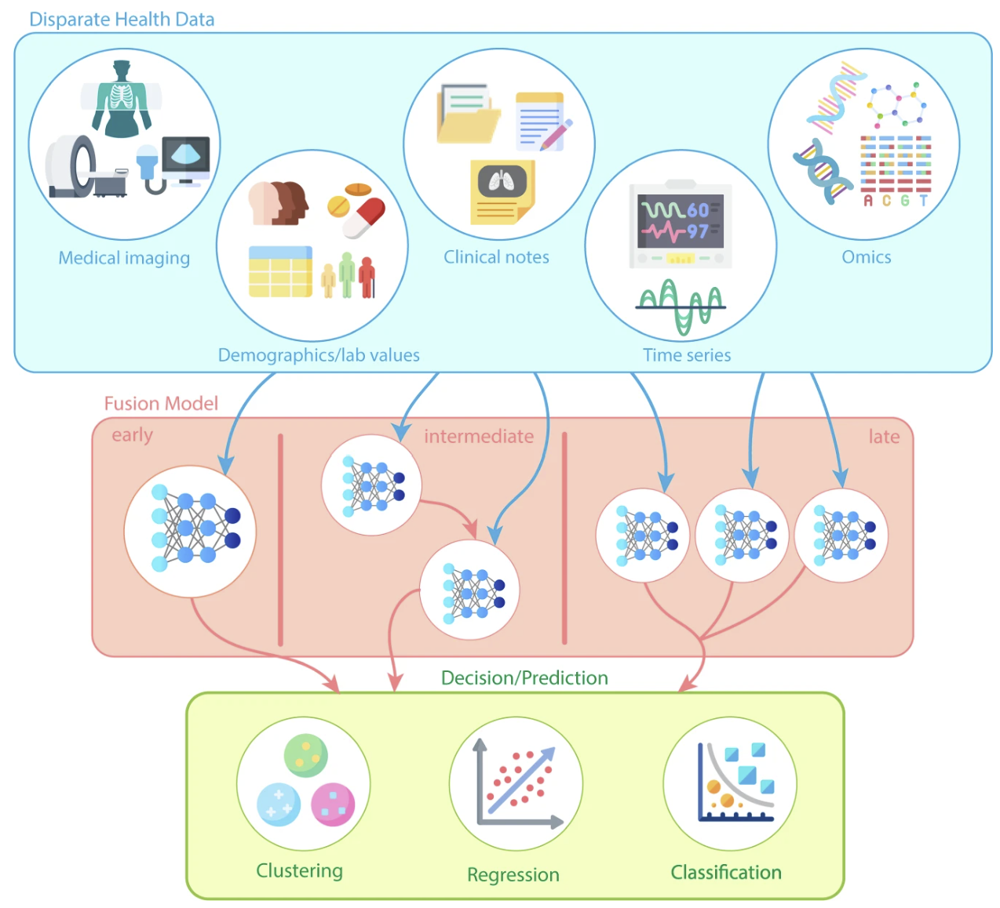
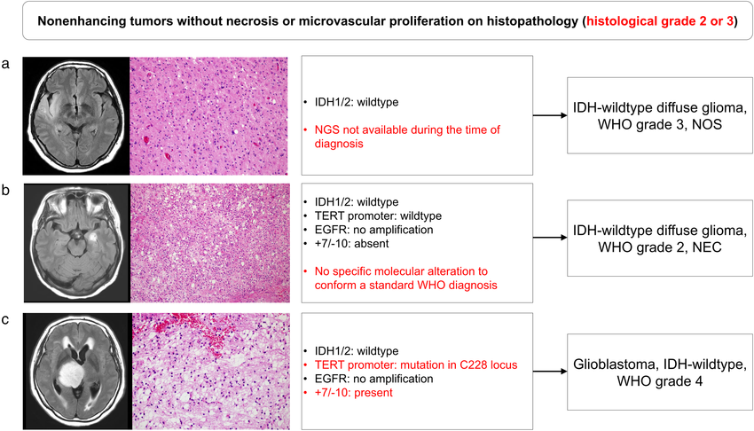
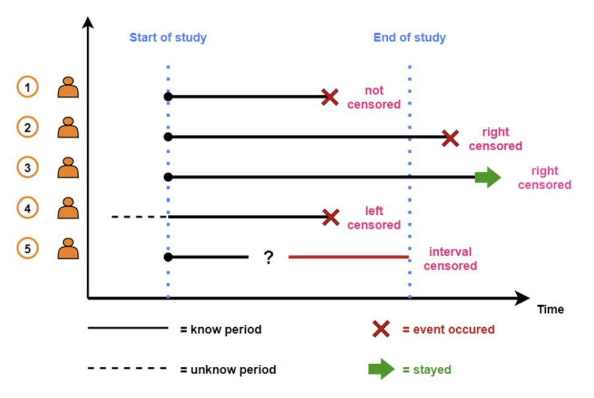
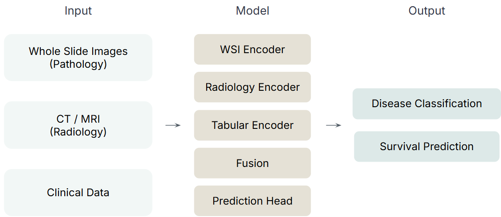

What Each Modality Sees
Before building anything, it's worth being precise about what kind of signal each data source actually carries — because that's what determines how we'll need to encode it.
Whole Slide Image
Pathology
A gigapixel-resolution scan of stained tissue biopsy (typically H&E).
Captures:
- Cell morphology
- Tumor microenvironment
- Spatial tissue architecture
CT / MRI
Radiology
3D volumetric imaging of the body, revealing macroscopic anatomical structure.
Captures:
- Tumor size and location
- Invasion extent
- Organ-level context
Clinical Data
Structured patient records: demographics, lab values, pathology reports.
Captures:
- Age, stage, biomarkers
- Treatment history
- Lab values
Multimodal Learning
What is it? Combining information from multiple data types (modalities) to form a more complete view of a patient's health than any single modality can provide on its own.
Why does it matter?
- Integrating modalities leads to richer representations, stronger generalization, and improved prediction.
- It's especially valuable in medicine, where complex conditions often can't be fully understood from a single data source — a tumor's morphology (WSI), its anatomical extent (MRI), and a patient's clinical history each carry information the others don't.

Clinical Application — Disease Classification
Predict the cancer type or molecular subtype directly from the data.
Clinical value: determines first-line treatment decisions.
Metrics: AUROC, Balanced Accuracy, F1.

Clinical Application — Survival Prediction
What makes it different from classification?
- Classification asks: will the event happen? (yes/no)
- Survival prediction asks: when will the event happen?
Key concepts
- Event — the outcome (e.g. biochemical recurrence) actually occurred during follow-up.
- Censored — no event had occurred by the end of the study. A censored patient still gives partial information: "survived at least this long."
- Risk score — the model outputs one scalar per patient; a higher score means a higher predicted risk of an earlier event.

Evaluation: the concordance index
C-index — among every pair of patients where we can tell who had the event first, what fraction does the model rank correctly by risk score? 0.5 is random, 1.0 is perfect agreement.
where:
- Ti is the observed survival time of patient i
- δi is the event indicator (δi = 1 for an observed event, δi = 0 for censoring)
- r̂i is the predicted risk score, with a higher value indicating higher risk
- I(·) is the indicator function
What We Will Build

| Input | Encoder |
|---|---|
| Whole Slide Images (Pathology) | WSI Encoder |
| CT / MRI (Radiology) | Radiology Encoder |
| Clinical Data | Tabular Encoder |
The three encoders' outputs are combined by a fusion step, then passed to a prediction head that produces two kinds of output from the same fused representation: disease classification and survival prediction.